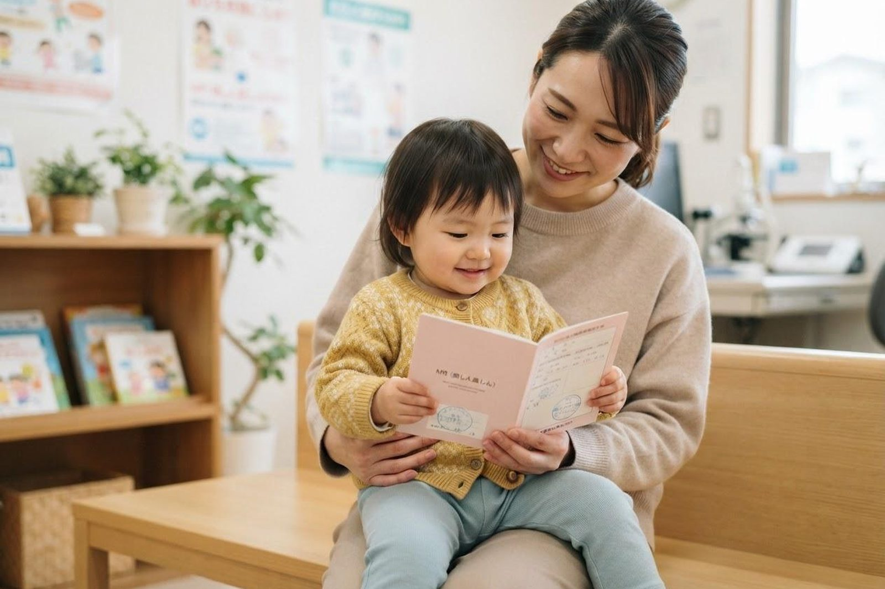

麻しん風しん（MR）ワクチンはいつ受けるのですか？大人も受けたほうがいいですか？
A. 回答MRワクチンは麻しん（はしか）と風しんの両方を予防するワクチンで、定期接種として合計2回受けることになっています。第1期は1歳の1年間（1歳の誕生日の前日から2歳の誕生日の前日まで）、第2期は5歳以上7歳未満で小学校入学前の1年間が対象とされています。1回の接種では十分な免疫がつかないことがあるため、2回受けることが大切とされています。大人の方は、まず母子手帳などで接種歴を確認し、必要に応じて抗体検査という選択肢があります。とくに妊娠を考えている方と、その周囲のご家族にとって、風しんの免疫の確認は大切とされています。

この記事の制度に関する内容は2026年8月時点のものです。定期接種の対象や公費の範囲は変わることがあります。最新の内容は倉敷市または当院にご確認ください。
定期接種のスケジュール
お子さんのMRワクチンは、次の2回が定期接種（公費）の対象とされています。
| 項目 | 第1期 | 第2期 |
|---|---|---|
| 対象 | 1歳の1年間（1歳の誕生日の前日から2歳の誕生日の前日まで） | 5歳以上7歳未満で、小学校入学前の1年間 |
| 受ける時期の目安 | 1歳になったらできるだけ早く | 年長さんの4月から翌年3月末まで |
| 回数 | 1回 | 1回 |
| 費用 | この期間であれば無料で接種できるとされています（倉敷市） | |
第2期は「小学校入学前の1年間」という限られた期間のため、うっかり過ぎてしまいやすい接種でもあります。年長さんの4月になったら、早めのご予約をおすすめします。
麻しんと風しん、それぞれどんな病気か
1本のワクチンで予防できる2つの感染症ですが、性質は異なります。
| 項目 | 麻しん（はしか） | 風しん |
|---|---|---|
| 感染力 | 空気感染し、感染力が非常に強いとされています。手洗いやマスクだけでは十分に防げないといわれます | おもに飛沫感染。麻しんほどではありませんが、集団の中で広がることがあります |
| おもな症状 | 10日ほどの潜伏期のあと、かぜのような症状に続いて39℃以上の高熱と発疹が出るとされています | 発疹・発熱・首のリンパ節の腫れなど。症状が軽く気づかれないこともあるとされています |
| 注意される点 | 肺炎や中耳炎の合併が多く、まれに脳炎を起こすことがあるとされています | 免疫が不十分な妊娠20週頃までの妊婦が感染すると、赤ちゃんの眼・心臓・耳などに障害が出ることがあるとされています（先天性風しん症候群） |
なぜ2回受けるのか
1回の接種では十分な免疫がつかない方が一定の割合でいるとされており、2回受けることでより確実な免疫が期待できると考えられています。母子手帳を確認して1回しか受けていない、あるいは記録が見当たらないという場合は、そのまま放置せずご相談ください。
大人も受けたほうがよいのでしょうか
年代によっては、公的な接種が1回だけだった時期や、対象になっていなかった時期があります。そのため、大人でも麻しん・風しんに対する免疫が十分でない方がいらっしゃると考えられています。
こんな方は、接種歴や抗体の確認を検討してみてください
- 母子手帳が見当たらず、接種歴がはっきりしない
- これまでに1回しか受けていない
- これから妊娠を考えている（妊娠中は接種の対象外とされています）
- 妊娠中のご家族と同居している、または同居予定がある
- 医療・保育・教育など、多くの人と接する仕事をしている
- 海外へ渡航する予定がある
風しんは、免疫が不十分な妊娠初期の女性がかかると、生まれてくる赤ちゃんに影響が出ることがあるとされています。妊娠中の方はワクチンを受けられないため、ご本人だけでなく、パートナーやご家族など周囲の大人が免疫を持っておくことが、赤ちゃんを守るうえで大切と考えられています。
抗体検査や成人の風しん予防接種については、自治体による助成制度が設けられている場合があります。制度の内容や公費の対象は変わることがありますので、最新の情報は倉敷市または当院にお問い合わせください。
接種を受ける前に確認していただきたいこと
- 体調：発熱している場合など、体調によっては当日の接種を見合わせることがあります。
- 妊娠の可能性：妊娠中の方は接種の対象外とされており、接種後は一定期間妊娠を避けることとされています。該当する可能性がある方は必ず事前にお伝えください。
- ほかのワクチンとの間隔：直前に他のワクチンを受けている場合、間隔の決まりがあります。母子手帳をお持ちください。
- アレルギーや持病：過去のワクチンで強い反応が出たことがある方、治療中の病気がある方は、事前にご相談ください。
- 接種後：発熱や発疹などがみられることがありますが、多くは数日で落ち着くとされています。気になる症状が続く場合はご連絡ください。
当院での対応（接種の実際）
当院は小児科・内科・感染症内科を標榜しており、お子さまの定期接種から大人の方の接種のご相談まで承っています。
- 予約：予防接種はお電話（086-525-0600）でのご予約をお願いしています。お子さまの年齢・月齢と、ご希望の日時をお伝えください。
- 所要時間：接種自体は短時間ですが、接種後は院内で少しお待ちいただき、体調の変化がないことを確認します。
- 持ち物：母子手帳、健康保険証（マイナ保険証）、市から届いた予診票・接種券。大人の方も、接種歴のわかる記録があればお持ちください。
- 費用：定期接種の対象期間内であれば公費で受けられます。対象外の場合や大人の方の接種は自費となることがありますので、詳しくはお問い合わせください。
- 診療時間：月〜土曜日 7:00〜12:00 ／ 月〜金曜日 14:30〜18:30（土曜日は14:30〜17:30まで）。無料駐車場を22台分ご用意しています。
MRワクチンのご予約・ご相談はお電話で
最終更新：2026年8月26日